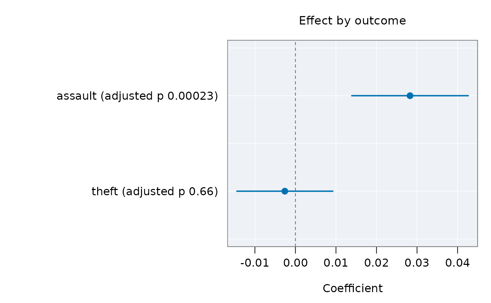

Effects by offence type in one call, with a multiple-testing correction
Source:R/apx2.R, R/apxplt.R
typefx.RdFits the same model to several outcomes (assault, robbery, burglary, property crime, ...) and adjusts the p-values for the number of outcomes tested.
Arguments
- data
A data frame.
- ys
The names of the outcome columns, one fit each.
- term
The coefficient reported (the exposure).
- est
The estimator.
- adj
"holm","bonferroni","BH"or"none".- ...
The other arguments of
est(x,fe, ...). Forplot(), passed to the base-graphics call.- x
An object of class
typefx.- main
NULL(a default title) or one string.- col
NULL(the palette) or colours.- pal
NULL(the session palette, seeplotopt()) or a palette name forblpal().
Details
Bondy, Roth and Sager (2020, figures 6 and 7) and Chin, Lurbe and
Shakya (2026) estimate the effect for each crime type separately and
report unadjusted tests; with many types, some will look significant by
chance. adj chooses the correction, through stats::p.adjust():
"holm" (the default; it controls the chance of any false rejection
and is uniformly more powerful than Bonferroni), "bonferroni",
"BH" (Benjamini-Hochberg, the false discovery rate) or "none".
Corrections that use the correlation of the estimates (Romano-Wolf) are
not offered.
plot() draws the effect on each outcome with its interval,
the adjusted p-value beside the outcome's name, and returns the rows
drawn.
References
Bondy, M., Roth, S. and Sager, L. (2020). Crime is in the air: the contemporaneous relationship between air pollution and crime. Journal of the Association of Environmental and Resource Economists, 7(3), 555-585. doi:10.1086/707127
Chin, S., Lurbe, S. and Shakya, P. (2026). Air pollution and crime: heterogeneity by offense types and exposure intensity. SSRN working paper. doi:10.2139/ssrn.6906621
Holm, S. (1979). A simple sequentially rejective multiple test procedure. Scandinavian Journal of Statistics, 6(2), 65-70.
Examples
set.seed(12)
d <- expand.grid(day = 1:60, area = 1:12)
d$pm <- rnorm(nrow(d), 20, 5)
d$assault <- rpois(nrow(d), exp(0.5 + 0.03 * d$pm))
d$theft <- rpois(nrow(d), 2)
r <- typefx(d, c("assault", "theft"), "pm", x = "pm",
fe = c("area", "day"))
r
#> typefx: one fit per outcome, p-values adjusted by holm
#> y est se lo hi p padj n
#> assault 0.028269 0.007333 0.01390 0.042642 0.0001157 0.0002314 720
#> theft -0.002616 0.006038 -0.01445 0.009219 0.6648421 0.6648421 720
plot(r)
